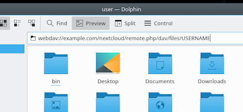

Tizhout restroù Nextcloud en ur implijout WebDAV
Douget e vez penn-da-benn ar protokol WebDAV gant Nextcloud, ha posupl eo deoc'h en em genstagañ ha kempredañ o restroù Nextcloud war WebDAV. Er pennad-mañ e vo desket ganeoc'h penaos kenstagañ Linux, macOS, Windows ha ardivinkoù hezoug d'ho servijer Nextcloud dre WebDAV. A-raok sellet ouzh penaos e vez stummet WebDAV, sellomp buan ouzh an doareoù kenstagañ aliet etre ar c'hliant hag ar servijour Nextcloud.
Note
Er skouerioù-mañ eo ret deoc'h kemm example.com/nextcloud gant URL ho servijour Nextcloud (hep an tamm teuliad m'emañ ho staliadur e gwrizienn ho tomani), ha "USERNAME" gant anv-implijer an implijer oc'h en em kenstagañ.
See the WebDAV URL (bottom left in settings) on your Nextcloud.
Note
In the following examples, you must use an app-password for login, which you can generate in your security settings.
Burev Nextcloud ha kliant hezoug
An doare aliet evit kempredañ ar burev PC d'ur servijour Nextcloud a zo graet en ur implijout Nextcloud/ownCloud sync clients. Posupl eo deoc'h stummañ ar c'hliant evit enrollañ restroù war n'eus forzh peseurt teuliad diabarzh ha choaz peseurt teuliad er servijour Nextcloud kemprennañ. Diskouezet e vez gant ar c'hliant stad ar c'henstagadurioù hag enrollet pep oberiantiz, evit gouzout peseurt restr pell a zo bet pellgarget war ho PC ha posupl eo deoc'h gwiriañ m'az eo bet kempredet gant ar servijour ar restr a zo bet krouet.
An doare aliet evit kempredañ ar servijour Nextcloud gant ardivinkoù Android hag Apple iOS a zo en ur implijout ar mobile apps.
Evit kenstagañ meziantoù d'ho servijour Nextcloud implijit an URL hag an teuliad diazez nemetken:
example.com/nextcloud
Ouzhpenn ar meziantoù hezoug roet gant Nextcloud pe ownCloud, posupl eo deoc'h implijout meziantoù all evit kemprennañ Nextcloud diouzh ho ardivink hezoug en ur implijout WebDAV. WebDAV Navigator a zo ur meziant (perc'henn) mat evit Android devices ha iPhones. An URL da implij a zo
example.com/nextcloud/remote.php/dav/files/USERNAME/
Arventennoù WebDAV
Ma ez eo gwelloc'h deoc'h eo posupl kenstagañ ho burev PC d'ho servijour Nextcloud en ur implijout ar protokol WebDAV e lec'h ar meziant kliant ispisial. Web Distributed Authoring and Versioning (WebDAV) a zo un astenn eus Protokol Treuskas Hypertext (HTTP) a aesa ar c'hrouiñ, lenn hag embann ar restroù war ar servijourien Web. Gant WebDAV eo posupl deoc'h tizhout ar pez ho peus rannet gant Nextcloud war Linux, macOS ha Windows evel pep rann kenrouedad pell, ha chom kempredet.
Tizhout ar restr en ur implijout Linux
Posupl eo deoc'h tizhout restroù gant ur reizhiad korvoiñ Linux en ur implijout an doare-mañ.
Merour restroù Nautilus
When you configure your Nextcloud account in the GNOME Control Center, your files will automatically be mounted by Nautilus as a WebDAV share, unless you deselect file access.
Posupl eo deoc'h staliañ ho restroù Nextcloud gant an dorn. Implijit ar protokol 'davs://` evit kenstagañ ar merour restroù Nautilus d'ho rannadennoù Nextcloud
davs://example.com/nextcloud/remote.php/dav/files/USERNAME/
Note
If your server connection is not HTTPS-secured, use dav:// instead
of davs://:

Note
Ar memes doare a dro gant merourien restroù all hag implijout GVf, evel Caja MATE and Nepomuk Cinnamon.
Tizhout restroù gant KDE pe Dolphin file manager
Evit tizhout ho restroù Nextcloud en ur implijout Dolphin file manager e KDE, implijit ar protokol webdav://
webdav://example.com/nextcloud/remote.php/dav/files/USERNAME/

Posupl eo deoc'h krouiñ ul liamm peurbadel d'ho servijour Nextcloud :
Digorit Dolphin ha pouezit war "Kenrouedad" er golonenn "Places" a-gleiz.
Pouezit war ar skeudenn anvet Ouzhpennañ un teuliad kenrouedad. An diviz a zlefe dont war wel gant WebDAV dija choazet.
Ma n'eo ket bet choazet WebDAV, choazit anezhañ.
Pouezit war Da heul
Lakait an dibarzhioù-mañ :
Anv : An anv ho peus c'hoant gwelout er merker-pajenn Lec'hioù, da skouer Nextcloud.
Implijer : Anv implijer Nextcloud implijet evit mont-tre, da skouer merour.
Servijour : Anv domani Nextcloud, da skouer exemple.com (hep http://** a-raok pe teuliadoù goude).
Teuliad - Lakait an hent
nextcloud/remote.php/dav/files/USERNAME/.
(Optional) Check the "Create icon" checkbox for a bookmark to appear in the Places column.
(Diret) Roit ur stumm ispisial pe ur sertikad SSL er checkbox "Port & Encrypted"
Krouiñ sternioù WebDAV war al linenn urzh Linux
Posupl eo deoc'h krouiñ sternioù diouzh linennoù urzh Linux. Aesaat a ra an tizhout Nextcloud m'ho peus c'hoant tizhout anezhañ evel n'eus forzh peseurt sistem-restroù sternioù pell. Ar skouerioù dindan a ziskouezo penaos krouiñ sternioù ha lakaat anezho en un doare otomatik bep wech ez it war hoc'h urzhiataer Linux.
Staliañ ar sturier sistem-restroù "davfs2" WebDAV, a aotre ac'hanoc'h da lakaat rannadennoù WebDAV evel n'eus forzh peseurt sistem-restroù pell. Implijit al linenn urzh evit staliañ Debian/Ubuntu:
apt-get install davfs2
Implijit al linenn urzh evit staliañ CentOS, Fedora, hag openSUSE:
yum install davfs2
Ouzhpennit ac'hanoc'h d'ar strollad "davfs2":
usermod -aG davfs2 <username>
Krouit neuze un teuliad "nextcloud" en ho teuliad home evit ar montpoint, ha ".davfs2/" evit ho restr stummañ personel:
mkdir ~/nextcloud mkdir ~/.davfs2
Eilit "/etc/davfs2/secrets" da "~/.davfs2":
cp /etc/davfs2/secrets ~/.davfs2/secrets
Lakait ac'hanoc'h evel perc'henner ha lakait an aotre lenn-skrivañ d'ar perc'henner nemetken:
chown <linux_username>:<linux_username> ~/.davfs2/secrets chmod 600 ~/.davfs2/secrets
Ouzhpennit ho hennadoù mont-tre Nextcloud e fin ar restr "sekredoù", en ur implijout ho URL servijour Nextcloud ha ho anv implijour ha ger-tremen Nextcloud:
https://example.com/nextcloud/remote.php/dav/files/USERNAME/ <username> <password> or $PathToMountPoint $USERNAME $PASSWORD for example /home/user/nextcloud john 1234
Ouzhpennañ an titouroù stern da
/etc/fstab:https://example.com/nextcloud/remote.php/dav/files/USERNAME/ /home/<linux_username>/nextcloud davfs user,rw,auto 0 0
Amprouit e ves stag ha dileset en ur implijout al linenn urzh-mañ. Ma eo bet staliet mat ne vo ket ezhomm eus un aotree gwrizienn:
mount ~/nextcloud
Posupl a vo deoc'h distagañ anezhañ ivez:
umount ~/nextcloud
Bewech e hit tre war ho sistem Linux e zlefe ho rannadennoù Nextcloud en em stagañ en un doare otomatek dre WebDAV en ho teuliad ~/nextcloud. Ma eo gweloc'h deoc'h stagañ anezhañ gant an dorn, cheñchit "auto" da "noauto" e /etc/fstab.
Kudennoù anavezet
Kudenn
N'eo ket implijapl an dra evit ar poent
Diskoulm
Ma ho peus kudennoù pa vez krouet ur restr en teuliad, cheñchiit /etc/davfs2/davfs2.conf hag ouzhpennit:
use_locks 0
Kudenn
Diwall ar sertifikad
Diskoulm
Ma implijit ur sertifikad sinet-e-unan, ur gemennadenn diwall ho po. Evit cheñch se, ret eo deoc'h stummañ "davfs2" evit anavezout ar sertifikad. Eilit mycertificate.pem da /etc/davfs2/certs/. Embannit goude /etc/davfs2/davfs2.conf ha dizisplegit al linenn servercert. Ouzhpennit hent ar sertifikad evel er skouer:
servercert /etc/davfs2/certs/mycertificate.pem
O tizhout restroù en ur implijout macOS
Note
MacOs Finder en deus kudennoù abalamour da veur a staliadur gant kudennoù <http://sabre.io/dav/clients/finder/>`_ ha ne rankfe bezañ implijet nemet ma vez lakaet da dreiñ gant Nextcloud Apache ha mod_php, pe Nginx 1.3.8+. Ur c'hliant a drofe gant macOS a vefe gouest da dizhout rannadennoù WebDAV evel meziantoù opensource evel Cyberduck (sellit penaos amañ) ha Filezilla. Ar c'hliantoù koñvers a zo en o zouez Mountain Duck, Forklift, Kasit, ha`Commander One <https://mac.eltima.com/>`_.
Evit tizhout restroù dre macOS Finder :
From the Finder’s top menu bar, choose Go > Connect to Server…:

When the Connect to Server… window opens, enter your Nextcloud server’s WebDAV address in the Server Address: field, i.e.:
https://cloud.YOURDOMAIN.com/remote.php/dav/files/USERNAME/

Pouezit war Kenstagañ. Ho servijour WebDAV a vo gwelet war ar burev evel ur gantenn rannet.
Tizhout restroù en ur implijout Microsoft Windows
If you use the native Windows implementation of WebDAV, you can map Nextcloud to a new drive using Windows Explorer. Mapping to a drive enables you to browse files stored on a Nextcloud server the way you would files stored in a mapped network drive.
Evit implij ar perzh-mañ eo ret kaout ur genstagadenn gant ar c'henrouedad. Ma ho peus c'hoant enrollañ ho restroù hep bezañ kenstaget, implijit ar c'hliant burev evit kempredañ pep restr war ho Nextcloud en un teuliad pe vuioc'h eus ho kantenn diabarzh.
Note
Windows 10 now defaults to allow Basic Authentication if HTTPS is
enabled prior to mapping your drive. On older versions of Windows,
you must permit the use of Basic Authentication in the Windows
Registry: launch regedit and navigate to
HKEY_LOCAL_MACHINE\SYSTEM\CurrentControlSet\Services\WebClient\Parameters.
Create or edit the DWORD value BasicAuthLevel (Windows Vista, 7 and 8) or
UseBasicAuth (Windows XP and Windows Server 2003) and set its value data
to 1 for SSL connections. Value 0 means that Basic Authentication is disabled,
a value of 2 allows both SSL and non-SSL connections (not recommended).
Then exit Registry Editor, and restart the computer.
Kenstagit ul lenner rouedad gant al linenn urzh
Ar skouer da heul a ziskouez penaos kenstagañ ul lenner rouedad gant ul linnen urzh. Evit kenstagañ al lenner :
Digeriñ an dermenell e Windows.
Lakit al linenn urzh-mañ er c'hinnig urzh evit kenstagañ gant al lenner Z
net use Z: https://<drive_path>/remote.php/dav/files/USERNAME/ /user:youruser yourpassword
lec'h ma 'z eo<drive_path> URL ho servijour Nextcloud.
Da skouer net use Z: https://example.com/nextcloud/remote.php/dav/files/USERNAME/ /user:youruser yourpassword`
Kenstaget eo restroù ho kont Nextcloud d'al lenner Z.
Note
Memes ma n'eo ket aliet, posupl eo deoc'h kenstagañ ar servijour Nextcloud en ur implijout HTTP, o lezel ar c'henstagadur disifret. Ma 'z oc'h evit implijout ur c'henstagadur HTTP war un ardivink en ul lec'h publik, aliet eo deoc'h implijout ur riboul VPN evit kaout trawalc'h a surentez.
Un doare all evit skrivañ al linenn urzh
net use Z: \\example.com@ssl\nextcloud\remote.php\dav /user:youruser
yourpassword
Kenstagañ al lenner gant Windows Explorer
Evit kenstagañ ul lenner en ur implijout Microsoft Windows Explorer :
Open Windows Explorer on your MS Windows computer.
Right-click on Computer entry and select Map network drive… from the drop-down menu.
Choazit ul lenner kenrouedad diabarzh ho peus c'hoant kenstagañ gant ho Nextcloud.
Lakait chomlec'h ho azgoulenn Nextcloud, heuliet gant /remote.php/dav/files/USERNAME/.
Da skouer :
https://example.com/nextcloud/remote.php/dav/files/USERNAME/
Note
For SSL protected servers, check Reconnect at sign-in to ensure that the mapping is persistent upon subsequent reboots. If you want to connect to the Nextcloud server as a different user, check Connect using different credentials.

Pouezit war ar bouton "Echuiñ".
Kenstagañ a ra Windows Explorer al lenner kenrouedad, oc'h aotreañ tizhout an azgoulenn Nextcloud.
Tizhout ar restr en ur implijout Cyberduck
Cyberduck a zo un FTP hag SFTP open source, WebDAV, OpenStack Swift, hag Amazon S3 stummet evit kas restroù war v/macOS ha Windows.
Note
Ar skouer-mañ a implij Cyberduck stumm 4.2.1
Evit implijout Cyberduck :
Lakaat ur servijour hep protokol resis. Da skouer :
"skouer.com"
Specify the appropriate port. The port you choose depends on whether or not your Nextcloud server supports SSL. Cyberduck requires that you select a different connection type if you plan to use SSL. For example:
80 (evit WebDAV)
443 (evit WebDAV (HTTPS/SSL))
Use the 'More Options' drop-down menu to add the rest of your WebDAV URL into the 'Path' field. For example:
remote.php/dav/files/USERNAME/
Aotreañ a ra bremañ Cyberduck da tizhout restroù war ar servijour Nextcloud.
Kudennoù anavezhet
Kudenn
Ne genstag ket Windows en ur implijout HTTPS.
Diskoulm 1
Ar c'hliant WebDAV Windows na zoug marteze ket Server Name Indication (SNI) war genstagadurioù sifret. Ma 'z eus ur gudenn en ur stagañ un azgoulenn Nextloud SSL sifret, galvit ho pourvezer evit lakaat ur chomlec'h IP resis evit ho servijour diazezet war SSL.
Diskoulm 2
The Windows WebDAV Client might not support TLSv1.1 and TLSv1.2 connections. If you have restricted your server config to only provide TLSv1.1 and above the connection to your server might fail. Please refer to the WinHTTP documentation for further information.
Kudenn
Ar gemennadenn fazi-mañ ho peus resevet : Error 0x800700DF : Re vras eo ar restr ha n'eo ket posupl enrollañ anezhañ.
Diskoulm
Windows limits the maximum size a file transferred from or to a WebDAV share may have. You can increase the value FileSizeLimitInBytes in HKEY_LOCAL_MACHINE\SYSTEM\CurrentControlSet\Services\WebClient\Parameters by clicking on Modify.
Evit brasaat ar vevenn betek 4GB, choazit Decimal, lakait 4294967295, hag adlañsit Windows hag ar servij WebClient.
Kudenn
Tizhout ho restroù Microsoft Office dre WebDAV c'hwitet.
Diskoulm
Kudennoù anavezet hag o ziskoulmoù a vez kavet er pennad KB2123563 .
Kudenn
N'eo ket posupl kenstagañ Nextcloud evel ul lenner WebDAV e Windows en ur implijout ur sertifikad sinet e-unan.
Diskoulm
Kit war hoc'h azgoulenn Nextcloud en ur implijout ho furcher kenrouedad karetañ.
Klikit betek m'ho po fazi ar sertifikad el linenn stad ho furcher.
Sellit ouzh ar sertifikad, goude adalek ivinell ar munudoù, choazit Eilañ d'ur Restr.
Enrollit er burev gant n'eus forzh peseurt anv, da skouer
myNextcloud.pem.Loc'hit en dro, lakait da dreiñ, MMC
Restr, Ouzhpennañ/Lemel, Labour aes.
Choazit ar sertifikad, Klikit war Ouzhpennañ, Ma c'hont implijer, goude Echu, hag OK.
Kit betek Trust Root Certification Authorities, Certificates.
Klikit-dehoù war ar Sertifikad, Choazit Pep Oberenn, Emporzhiañ.
Choazit ar sertifikad enrollet diouzh ar burev.
Select Place all Certificates in the following Store, Click Browse.
Gwiriit ar vouest a ginnig Show Physical Stores, Expand out Trusted Root Certification Authorities, ha choazit Local Computer, klikit war OK, Echuiñ an emporzhiañ.
Sellit ouzh ar roll evit bezañ sur e teu war wel. Marteze ho po ezhomm da nevesaat ar roll a-raok gwelout anezhañ Kuitait MMC.
Digorit ar furcher, choazit ostilhoù, lamit istor ar furcher.
Choazit pep tra estreget e Roadennoù Prevez Diabarzh Silet, peurechuet.
Kit d'an dibaboù Internet, Content Tab, skubit stad an SSl.
Serrit ar furcher, digorit anezhañ en-dro hag amprouit.
Kudenn
You cannot download more than 50 MB or upload large files when the upload takes longer than 30 minutes using Web Client in Windows 7.
Diskoulm
Dielloù an doareoù all d'ober a zo er pennad KB2668751.
Tizhout ar restr en ur implijout cURL
Since WebDAV is an extension of HTTP, cURL can be used to script file operations.
Evit krouiñ un teuliad gant an deiziat evel anv :
$ curl -u user:pass -X MKCOL "https://example.com/nextcloud/remote.php/dav/files/USERNAME/$(date '+%d-%b-%Y')"
Evit pellkas ur restr "error.log" en teuliad-mañ :
$ curl -u user:pass -T error.log "https://example.com/nextcloud/remote.php/dav/files/USERNAME/$(date '+%d-%b-%Y')/error.log"
Evit diblasañ ur restr :
$ curl -u user:pass -X MOVE --header 'Destination: https://example.com/nextcloud/remote.php/dav/files/USERNAME/target.jpg' https://example.com/nextcloud/remote.php/dav/files/USERNAME/source.jpg
Evit kaout perzhioù ar restroù en teuliad gwrizienn :
$ curl -X PROPFIND -H "Depth: 1" -u user:pass https://example.com/nextcloud/remote.php/dav/files/USERNAME/ | xml_pp
<?xml version="1.0" encoding="utf-8"?>
<d:multistatus xmlns:d="DAV:" xmlns:oc="http://nextcloud.org/ns" xmlns:s="http://sabredav.org/ns">
<d:response>
<d:href>/nextcloud/remote.php/dav/files/USERNAME/</d:href>
<d:propstat>
<d:prop>
<d:getlastmodified>Tue, 13 Oct 2015 17:07:45 GMT</d:getlastmodified>
<d:resourcetype>
<d:collection/>
</d:resourcetype>
<d:quota-used-bytes>163</d:quota-used-bytes>
<d:quota-available-bytes>11802275840</d:quota-available-bytes>
<d:getetag>"561d3a6139d05"</d:getetag>
</d:prop>
<d:status>HTTP/1.1 200 OK</d:status>
</d:propstat>
</d:response>
<d:response>
<d:href>/nextcloud/remote.php/dav/files/USERNAME/welcome.txt</d:href>
<d:propstat>
<d:prop>
<d:getlastmodified>Tue, 13 Oct 2015 17:07:35 GMT</d:getlastmodified>
<d:getcontentlength>163</d:getcontentlength>
<d:resourcetype/>
<d:getetag>"47465fae667b2d0fee154f5e17d1f0f1"</d:getetag>
<d:getcontenttype>text/plain</d:getcontenttype>
</d:prop>
<d:status>HTTP/1.1 200 OK</d:status>
</d:propstat>
</d:response>
</d:multistatus>